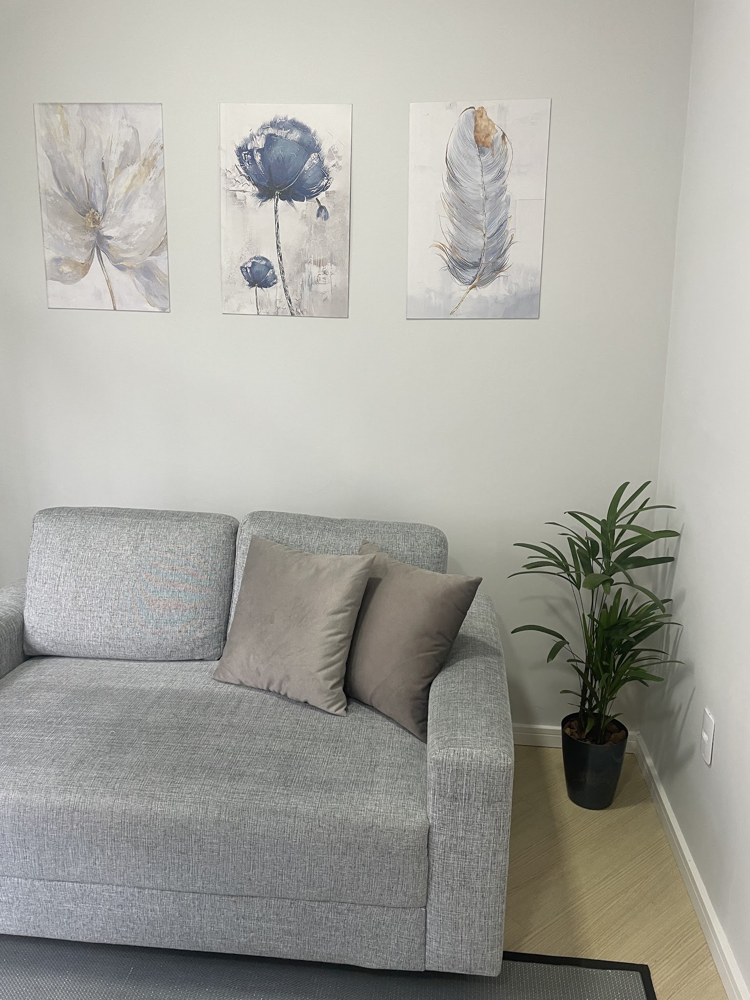

Psicoterapia
Para crianças, adolescentes e adultos, com orientação à família quando necessário.
Saúde emocional é investimento em você.
Sou Juliana Maria de Lima, psicóloga desde 2021. Atendo crianças, adolescentes e adultos com base na Terapia Cognitivo-Comportamental, de forma acolhedora e individualizada.
Atuo com atendimento psicológico, avaliação psicológica e intervenções psicológicas, buscando oferecer um espaço seguro, acolhedor e individualizado. Minha prática é fundamentada na Terapia Cognitivo-Comportamental (TCC), considerando as necessidades, características e objetivos de cada paciente.
Atendimento de demandas relacionadas a:
Para crianças, adolescentes e adultos, com orientação à família quando necessário.
Processo estruturado para compreender demandas e orientar os próximos passos.
Estratégias planejadas para os objetivos de cada paciente.

A Terapia Cognitivo-Comportamental é uma abordagem com base científica que ajuda a entender como pensamentos, emoções e comportamentos se relacionam — e a desenvolver formas mais saudáveis de lidar com as dificuldades do dia a dia.
Envie uma mensagem para saber horários e como funciona o atendimento.
WhatsApp (11) 94456-0194Ambiente acolhedor à comunidade LGBTQ+